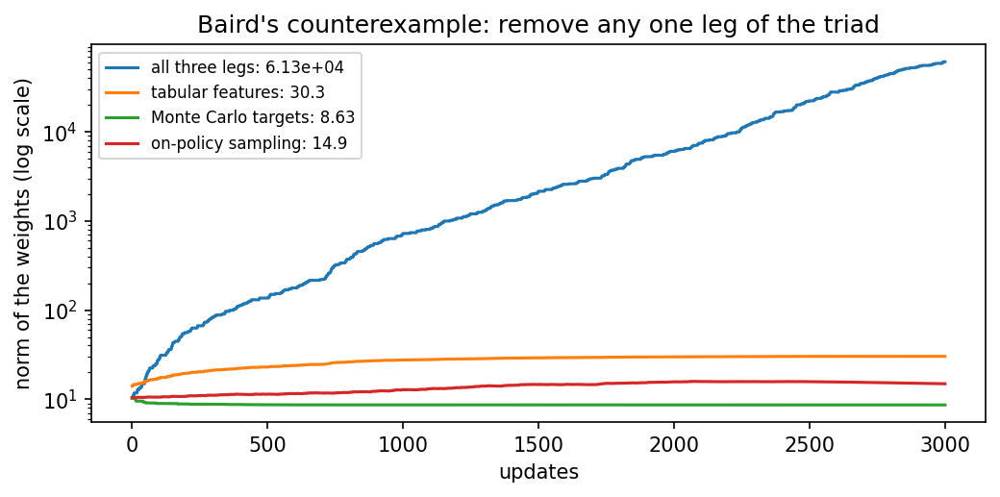

Overview
Day 1 solved problems whose transitions were known. In practice an agent rarely has such a model; it must learn from its own experience. This day covers the methods that learn values directly from experience: Monte Carlo methods, which wait for the end of an episode, temporal difference learning, which learns from each step [1], and the control methods SARSA [2] and Q-learning [3], which differ in one detail with large consequences near a cliff. It ends with a deep Q-network, whose two engineering ideas, replay and a target network [4, 5], are tested by removing them.
Day at a glance
flowchart LR A["Learning without a model"] --> B["Monte Carlo and TD"] B --> C["SARSA and Q-learning"] C --> D["The cliff"] D --> E["Deep Q-networks"] E --> F["Your field"] F --> G["Python step 2"]
Learning without a model
Without a model, values are estimated from experience. A Monte Carlo method plays an episode to its end and moves the value of each visited state towards the return that actually followed. A temporal difference (TD) method does not wait: After each step it moves the value of the state towards the reward plus the discounted value of the next state, an estimate built on another estimate [1]. Monte Carlo is unbiased but noisy; TD is less noisy but starts from biased guesses. Which one learns faster depends on the problem: On TokenWorld, whose reward comes only at the end, Monte Carlo wins; on a random walk with many steps, TD wins.
Animation. Monte Carlo and temporal difference learning on the five-state random walk, averaged over 40 runs. Change the step size and the number of episodes and compare the errors.
In Colab, section 2. Compare Monte Carlo and TD on TokenWorld and on a random walk.
Check your understanding. What does a temporal difference update use instead of the full return?
SARSA and Q-learning
To improve behaviour, the agent learns the values of actions, Q-values, and prefers actions with high values while still exploring. SARSA updates towards the value of the action it will actually take next, including exploratory ones [2]; it learns about the policy it follows and is called on-policy. Q-learning updates towards the value of the best next action, whatever it actually does [3]; it learns about the greedy policy while exploring and is called off-policy. Part C of the lab computes one update of each by hand.
In Colab, section 3. Train SARSA and Q-learning on TokenWorld and compare them with the exact optimum of Day 1.
Check your understanding. Q-learning updates towards the best next action even when the agent explores. What is this property called?
The cliff
The difference shows on a cliff. Q-learning learns the shortest path along the edge, which would be optimal if the agent never explored; while it still explores, it sometimes steps off. SARSA takes its own exploration into account and learns a path further from the edge. During learning, SARSA therefore collects clearly more reward, although Q-learning's final greedy path is shorter. Which is better depends on whether mistakes during learning are expensive, as they are for a real robot.
Animation. Greedy paths of Q-learning and SARSA after 500 episodes on a cliff, with their returns during learning. Raise the exploration rate and watch SARSA move further from the edge.
In Colab, section 4. Run both methods on the cliff and compare their paths and their returns during learning.
Check your understanding. Why does SARSA collect more reward than Q-learning while learning on the cliff?
Deep Q-networks
When states are too many for a table, a neural network approximates the Q-values. Training it naively is unstable: Successive samples are strongly correlated, and the target moves with every update. A deep Q-network adds two remedies [4]. Experience replay stores past transitions and trains on random batches of them [5], and a target network, a copy updated only now and then, keeps the target still. The notebook writes the network in NumPy and removes each remedy in turn: Without replay the network reaches the optimum in only two thirds of the runs, while without the target network its value estimates are clearly worse.
In Colab, section 5. Train a deep Q-network in NumPy, then remove replay and the target network one at a time.
Check your understanding. What does experience replay do?
Your field
The notebook's switch builds a gridworld from a field: a warehouse with shelves and a forklift lane, a drone route with wind and a no-fly zone, or a building to evacuate with fire. SARSA and Q-learning learn in it side by side, and their greedy paths are drawn on the map.
In Colab, section 6. Set the switch to warehouse, drone or evacuation and compare SARSA and Q-learning on its map.
Going further (optional)
Two topics deepen the day. The schedules of the exploration rate and the step size decide whether a method reaches the optimum at all; with both decaying, all eight seeds of the notebook find it, with both constant, only one. Function approximation, bootstrapping and off-policy learning together form the deadly triad [1]: Each is harmless alone, and together they can make the weights grow without limit, as Baird's counterexample shows.

In Colab, section 7. Compare four schedules over eight seeds and run Baird's counterexample with each leg of the triad removed.
Python step 2: NumPy arrays and tables of values
In Colab, after the setup cell. Topics: A Q-table as an array · One temporal difference update · An environment as a function · Q-learning on the chain · The table, readable. Runnable cells, a quick check and three exercises.
The notebook continues with the hands-on sections, and the interactive lab holds three practice parts and the self-assessment. The study path, the daily task and the research assignment are on the day overview.
Review cards
Select a card to turn it over.
References
[1] Sutton, R. S., & Barto, A. G. (2018). Reinforcement Learning: An Introduction (2nd ed.). MIT Press.
[2] Rummery, G. A., & Niranjan, M. (1994). On-line Q-learning using connectionist systems (Technical Report CUED/F-INFENG/TR 166). Cambridge University Engineering Department.
[3] Watkins, C. J. C. H., & Dayan, P. (1992). Q-learning. Machine Learning, 8(3-4), 279-292.
[4] Mnih, V., Kavukcuoglu, K., Silver, D., Rusu, A. A., Veness, J., Bellemare, M. G., Graves, A., Riedmiller, M., Fidjeland, A. K., Ostrovski, G., et al. (2015). Human-level control through deep reinforcement learning. Nature, 518(7540), 529-533. https://doi.org/10.1038/nature14236
[5] Lin, L.-J. (1992). Self-improving reactive agents based on reinforcement learning, planning and teaching. Machine Learning, 8(3-4), 293-321.
[6] Harris, C. R., Millman, K. J., van der Walt, S. J., Gommers, R., Virtanen, P., Cournapeau, D., Wieser, E., Taylor, J., Berg, S., Smith, N. J., et al. (2020). Array programming with NumPy. Nature, 585(7825), 357-362. https://doi.org/10.1038/s41586-020-2649-2
[7] McKinney, W. (2010). Data structures for statistical computing in Python. In Proceedings of the 9th Python in Science Conference (pp. 56-61). https://doi.org/10.25080/Majora-92bf1922-00a
[8] van Hasselt, H., Guez, A., & Silver, D. (2016). Deep reinforcement learning with double Q-learning. In Proceedings of the AAAI Conference on Artificial Intelligence, 30(1), 2094-2100.